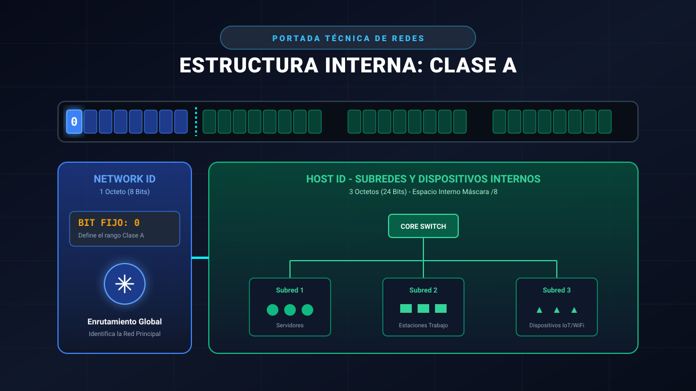
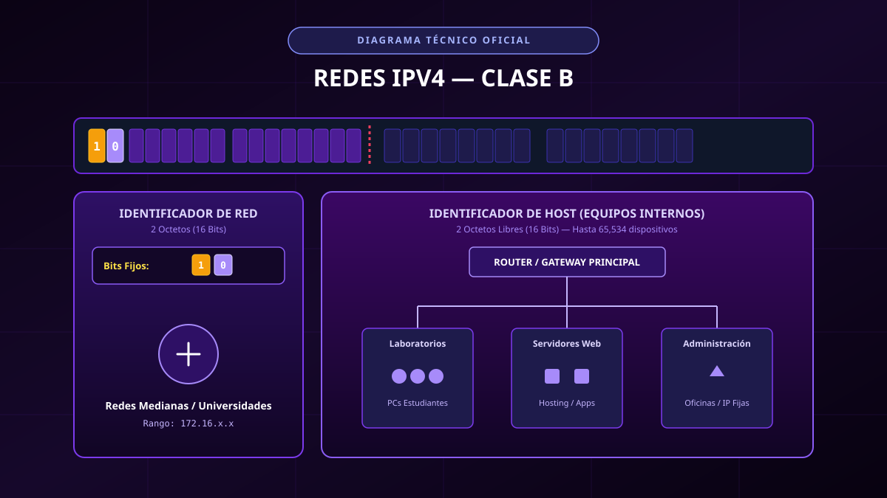
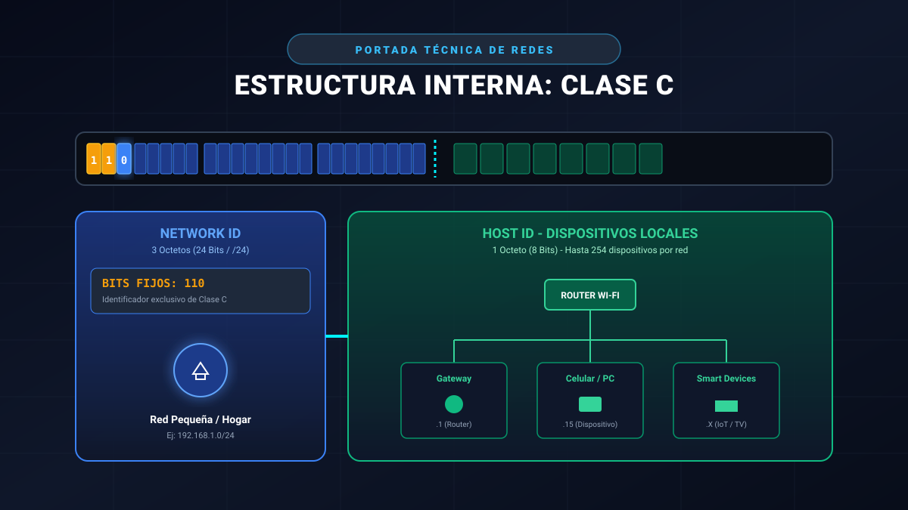
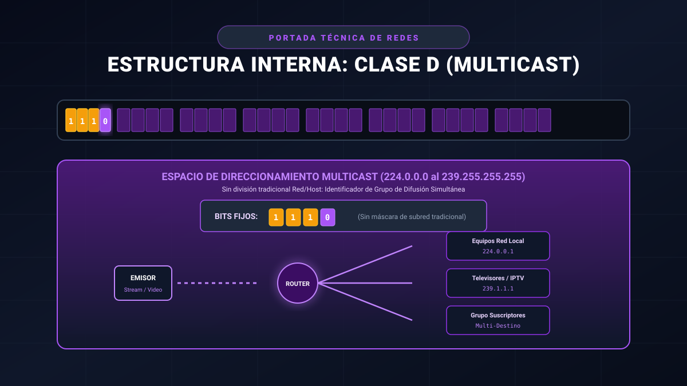
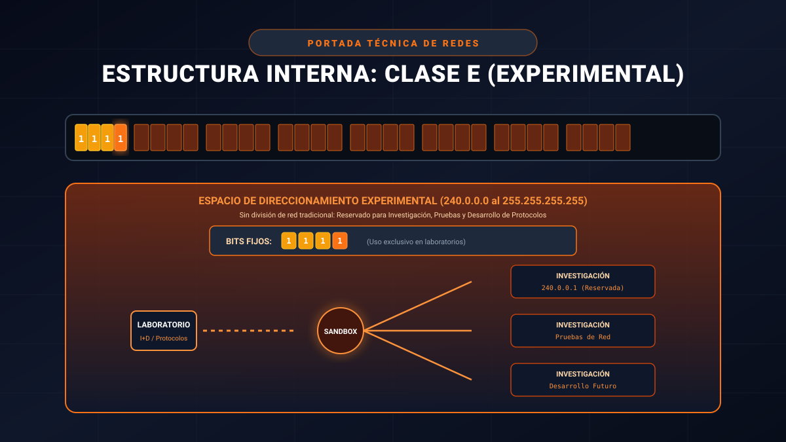

¿Qué son las clases de red?
Las clases de red son una forma antigua de dividir las direcciones IPv4 según los primeros bits de su primer octeto. Cada clase define el tamaño de la red y cuántos equipos (hosts) puede contener. Hoy se usa principalmente el esquema sin clases (CIDR), pero las clases siguen apareciendo en exámenes y libros.
Las cinco clases

Clase A 1 – 126
Clase B 128 – 191
Clase C 192 – 223
Clase D 224 – 239
Clase E 240 – 255
Desde 1993
¿Por qué se pasó a CIDR?
El esquema sin clases (CIDR) permite indicar la red con un número después de una barra (bits de red). Esto posibilita asignar bloques de tamaño exacto y evitar el desperdicio de direcciones que provocaban las clases fijas.
192.168.1.0/24